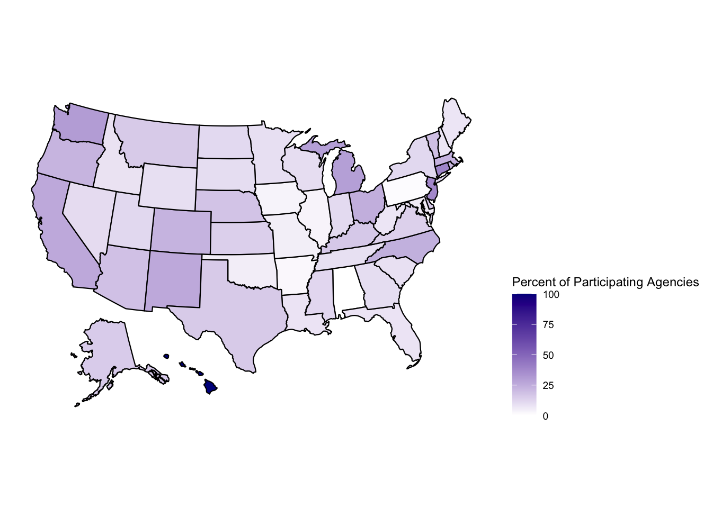
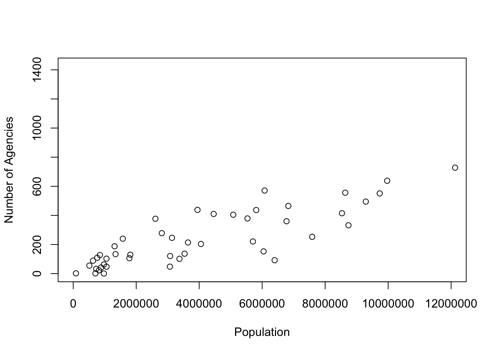
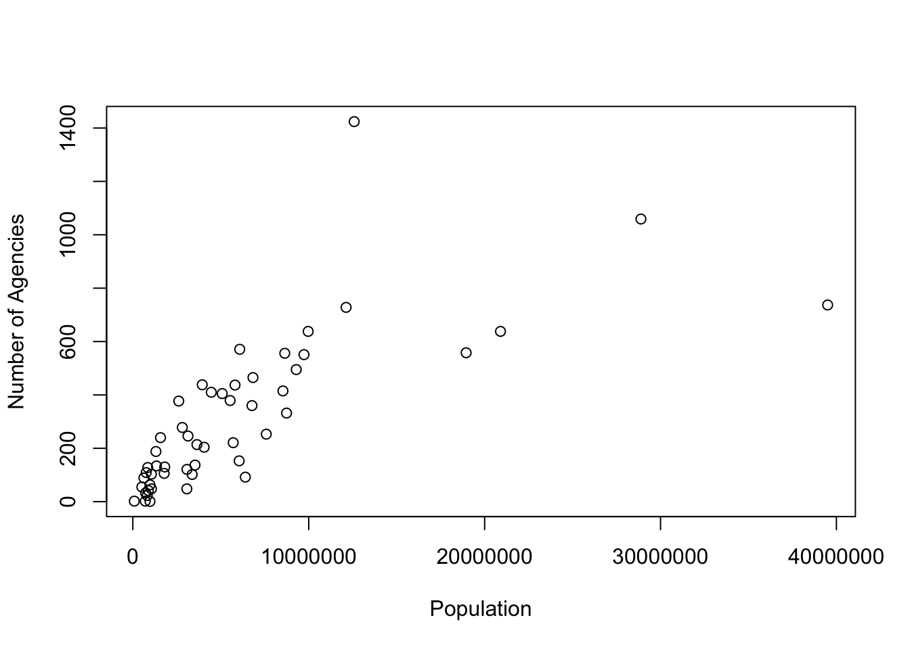
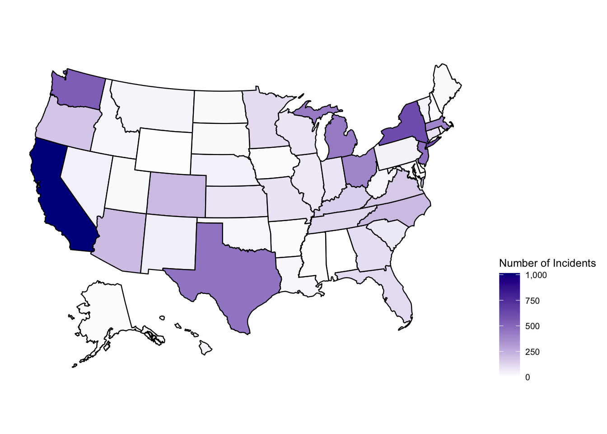
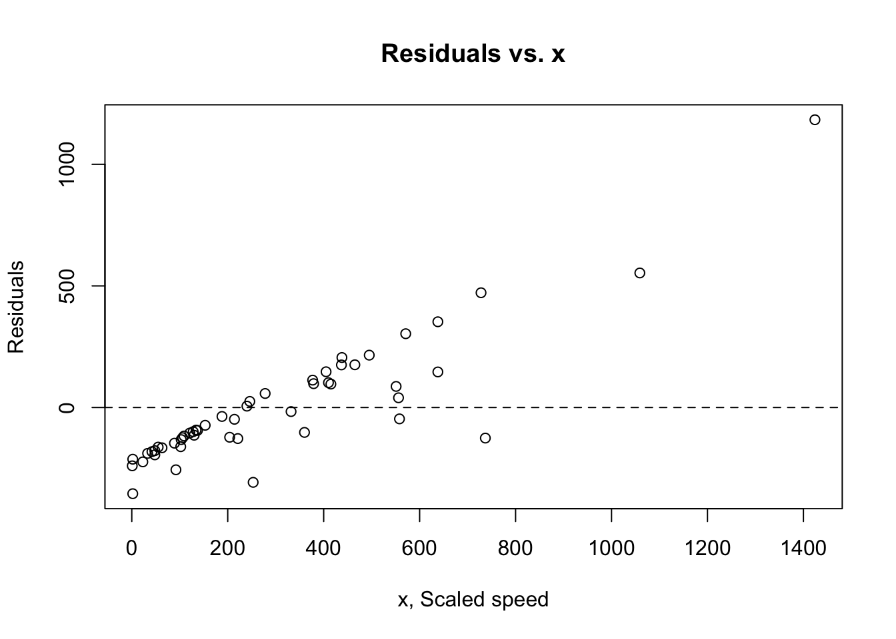
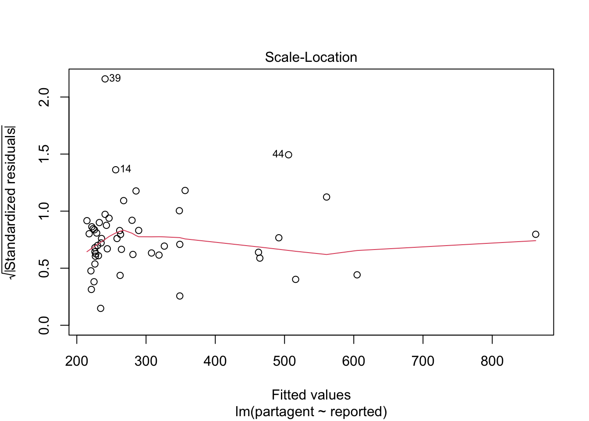
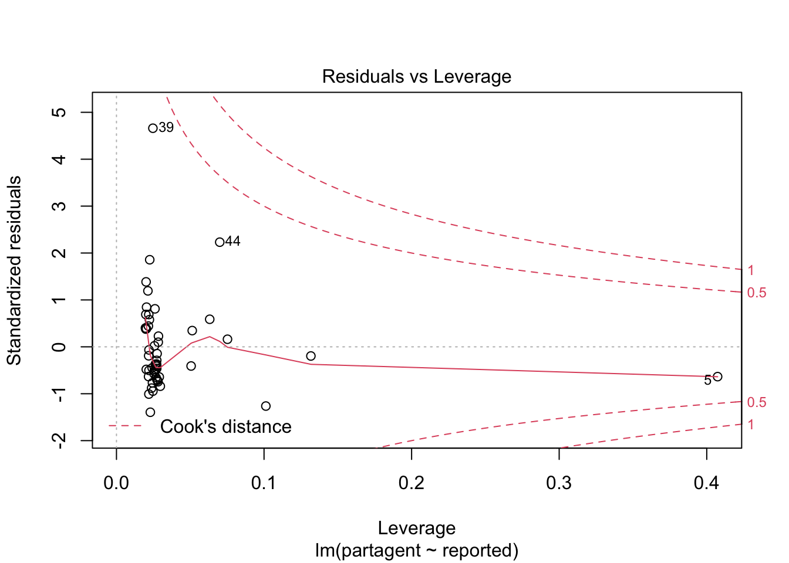
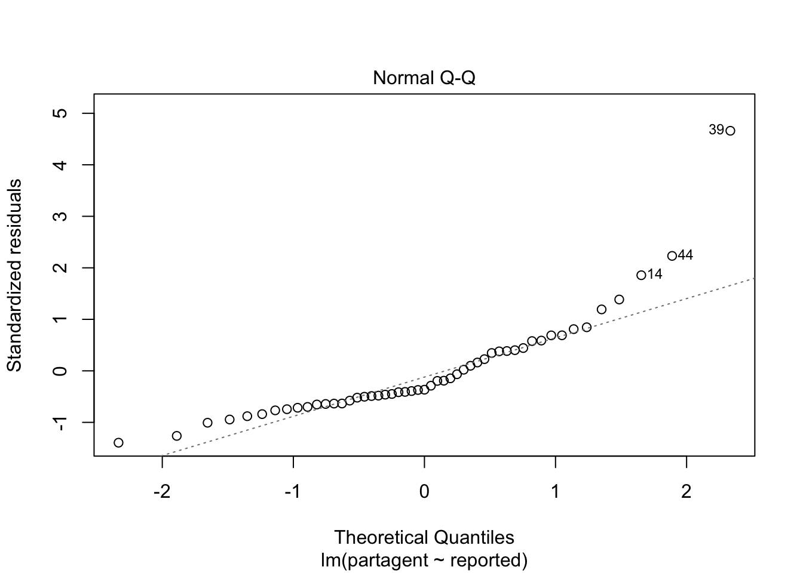

Final Paper
Hate Crime Underreporting: An Analysis Testing the Relationship Between Reported Hate Crimes and Reporting Agencies
CRIM 250: Statistics For The Social Sciences Professor Cuellar
Collaborators: Jair Jean-Gilles Akshat Shah Abraham Sandoval Iñiguez Marcus Ramirez
library(usmap)
library(ggplot2)
table12 <- read.csv(file="table12.csv")
table11 <- read.csv(file="table11.csv")
summary(table12)## Participating.state.Federal Number.of.participating.agencies
## Length:51 Length:51
## Class :character Class :character
## Mode :character Mode :character
##
##
##
## Population.covered Agencies.submitting.incident.reports
## Length:51 Min. : 0.00
## Class :character 1st Qu.: 10.00
## Mode :character Median : 22.00
## Mean : 41.65
## 3rd Qu.: 50.50
## Max. :208.00
## Total.number.of.incidents.reported
## Length:51
## Class :character
## Mode :character
##
##
## table12$Number.of.participating.agencies <-
as.integer(gsub(",", "", table12$Number.of.participating.agencies))
table12$Population.covered <-
as.integer(gsub(",", "", table12$Population.covered))
table12$Total.number.of.incidents.reported <-
as.integer(gsub(",","",table12$Total.number.of.incidents.reported))
summary(table12)## Participating.state.Federal Number.of.participating.agencies
## Length:51 Min. : 1.0
## Class :character 1st Qu.: 102.5
## Mode :character Median : 221.0
## Mean : 304.7
## 3rd Qu.: 437.5
## Max. :1424.0
## Population.covered Agencies.submitting.incident.reports
## Min. : 85670 Min. : 0.00
## 1st Qu.: 1185942 1st Qu.: 10.00
## Median : 3643904 Median : 22.00
## Mean : 5985965 Mean : 41.65
## 3rd Qu.: 7209156 3rd Qu.: 50.50
## Max. :39502561 Max. :208.00
## Total.number.of.incidents.reported
## Min. : 0
## 1st Qu.: 21
## Median : 65
## Mean : 141
## 3rd Qu.: 169
## Max. :1015Section I. Research Question
The primary objective of this project is to gauge FBI UCR reporting agency participation, assessing the potential for hate crime underreporting along state-lines. For this paper, we chose to narrow our goals in order to answer the question: what is the relationship between the number of UCR reporting agencies per state and the total count of reported hate crimes in the United States? We hypothesize that states with smaller populations are more likely to have fewer reporting agencies, which in turn leads to underreporting.
We chose this research question due to the growing concern for hate crimes in the country. The prejudice-motivated crime has become increasingly visible in recent years due to various factors including the COVID-19 pandemic. Thus, examining potential compounding causes that contribute to the underreporting of hate crimes is paramount, as well as identifying potential solutions to reduce the experienced effect of the dark figure of crime. We hope to contribute to broader studies by providing a specialized assessment of reporting agencies.
Section II. Description of Data
The data we examined for our assessment is derived from the Uniform Crime Reporting Program, also known as the UCR Program. The UCR Program includes data from more than 18,000 cities, universities/colleges, counties, states, tribal areas, and federal law enforcement agencies. Agencies participate voluntarily and submit their crime data either through a state UCR program or directly to the FBI’s UCR Program. The UCR Program’s foundation was created in 1929 by the Committee on Uniform Crime Records, which was in turn established by the International Association of Chiefs of Police in hopes of standardizing criminal reporting.
The UCR is regarded as the largest and arguably most reliable crime data source; however, researchers remain divided on its accuracy due to the nature of the program. We summarize popular arguments in order to provide context for our extrapolated findings.
The program’s support lies in: It being the oldest and most consistent form of measuring crime, with the FBI providing accessible data as early as the 1960s; Its broad national 98.4% metropolitan and 92.7% non-metropolitan coverage; Its support for cross-year referencing and analysis; Its consistently reliable reporting of higher level crimes; And its agencies’ broad coverage of 97% of the national population.
Whereas, the program’s criticism results from: The continued existence of underreporting, which in turn stems from: Victims believing law enforcement cannot or will not act on their behalf; Victims fostering a standing fear of reprisal; Victims’ exposure to deterring cultural or social reporting stigmas; And victims’ normalization of certain crimes; Inconsistent law enforcement reporting practices; And the general absence of “Victimless” crime in reportings.
We utilized the FBI UCR 2019 Report on Hate Crime Statistics for our specialized assessment. The dataset includes 14 tables detailing hate crimes on a national scale, with defined variables including bias motivation, crime types, and identifying offender/victim characteristics, among others. Our particular analysis required the use of tables 11 and 12. Jointly, both tables were used to contextualize the relationship between state’s reporting agencies and reported hate crimes, accounting for differences in agency counts, crime frequencies, and populations.
The former, “Table 11: Offenses and Offense Classification by Participating States,” provided a breakdown of state’s reported hate crimes. Primary variables included an identifying state name, a state’s total offenses, and specified offense counts for crimes against persons, property, and society, with respective subcategories by committed crimes. To elaborate, a total sum count for a state’s reported hate crimes against persons or property were reported. Further data for particular crimes such as murder, assault, and arson were then additionally reported via specified crime counts within their respective crime classification. Reported incidents of murder, for example, could thus be studied either in isolation or within the broader parameters of a state’s overall crime total or crimes against persons.
In contrast, the latter, “Table 12: Agency Hate Crime Reporting by State and Federal,” provided a summary of each state’s total participating agencies and reported incidents. Primarily variables included an identifying state name, state populations, a state’s total number of incidents reported, and a state’s overall number of UCR participating agencies, as well the number of participating agencies who submitted reports.
Table 12 was thus particularly valuable to the testing of our hypothesis and completion of our objective, while table 11 contextualized our findings.
Section III. Exploratory Data Analysis To reiterate, our primary objective was to examine the relationship between reporting agencies and reported hate crimes, as we anticipated states with smaller populations would be more likely to have fewer reporting agencies and thus under-report crimes more frequently. Before conducting a linear regression for total incidents reported and participating agencies, we completed two exploratory data analyses. Both expressed via scatterplots, we examined correlational relationships between a state’s numbers of participating agencies and population, as well as a state’s total incidents reported and population.
To contextualize our preliminary findings, we will first briefly summarize our variables. Our analyses included all fifty states, as well as the District of Columbia. However, while all states and DC have UCR participating agencies, some agencies and states fail to report hate crime incidents. Such was the case with Alabama, which reported no incidents despite having two participating agencies. Hawaii, in contrast, did indeed reporte with one sole agency. We will discuss the consequences of this phenomenon in the later discussion. A visual summary of state’s percentages of agencies who reported cases out of their total participating agency count can be found below:
percent_participate_table <- data.frame(table12$Participating.state.Federal,
table12$Agencies.submitting.incident.reports,
table12$Number.of.participating.agencies)
colnames(percent_participate_table) <- c('state', 'Agencies Submitting Reports'
, "Agencies Participating")
percent_participate_table = transform(percent_participate_table, freq = (percent_participate_table$`Agencies Submitting Reports`/percent_participate_table$`Agencies Participating`)*100)
plot_usmap(data = percent_participate_table, values = "freq")+scale_fill_continuous(name = "Percent of Participating Agencies",low = "white", high ="darkblue", label = scales::comma) + theme(legend.position = "right")
The prior graph provides context for the first exploratory data analysis, where we sought to identify the relationship between a state’s population and its number of UCR participating agencies. Our quick assessment yielded a correlation coefficient of 0.7281031, reflected by a clear visual upward trend identifiable in both the raw and fitted graphs depicted below. Note the distinct x-axis values; the rightmost graph allows for a more narrow analysis.
options(scipen=999)
plot(table12$Population.covered, table12$Number.of.participating.agencies,
xlab="Population", ylab="Number of Agencies")
plot(table12$Population.covered, table12$Number.of.participating.agencies,
xlab="Population", ylab="Number of Agencies",
xlim = range(0, 12000000)) 
cor(table12$Population.covered, table12$Number.of.participating.agencies)## [1] 0.7281031Observing a potential relationship, we conducted our second preliminary analysis, this time testing the relationship between a state’s population and its total number of incidents reported. Depicted below, is the scatterplot depicting the assessment, which yielded a correlation coefficient of 0.7795704, as well as a map for states’ overall incidents for context. Again, please note the outermost value for the x-axis on the scatterplot.
plot(table12$Population.covered, table12$Number.of.participating.agencies,
xlab="Population", ylab="Number of Agencies")
incidents <- data.frame(table12$Participating.state.Federal, as.numeric(gsub(",","",table12$Total.number.of.incidents.reported)))
colnames(incidents) <- c('state', 'Total number of incidents')
plot_usmap(data = incidents, values = "Total number of incidents")+scale_fill_continuous(name = "Number of Incidents",low = "white", high ="darkblue", label = scales::comma) + theme(legend.position = "right")
With promising exploratory data analysis results, we decided to test our hypothesis by performing a linear regression on reporting agencies and reported hate crimes.
Section IV. Linear Regression We conducted a linear regression to determine if there was an association between the number of agencies and the number of incidents that a state records. As we fit this linear model, it will help us see if an increase of the number of agencies increased the number of incidents a state reported. First, we got a summary of our linear model to see if we have obtained a significant p-value. We obtained a p-value of 0.001 which means we should be able to reject the null hypothesis, but when we look at the residual standard error, it is clear that we have obtained some obscure amount since this would mean that we deviated by 257.1 agents from our regression line. So, we must now test our assumptions in order to verify we have a valid model.
partagent <-table12$Number.of.participating.agencies
reported <-table12$Total.number.of.incidents.reported
lm_agencies_report <- lm(formula = partagent ~ reported,
data = table12)
summary(lm_agencies_report)##
## Call:
## lm(formula = partagent ~ reported, data = table12)
##
## Residuals:
## Min 1Q Median 3Q Max
## -354.40 -153.95 -92.78 100.04 1183.17
##
## Coefficients:
## Estimate Std. Error t value Pr(>|t|)
## (Intercept) 214.6460 44.2994 4.845 0.0000131 ***
## reported 0.6385 0.1831 3.486 0.00104 **
## ---
## Signif. codes: 0 '***' 0.001 '**' 0.01 '*' 0.05 '.' 0.1 ' ' 1
##
## Residual standard error: 257.1 on 49 degrees of freedom
## Multiple R-squared: 0.1988, Adjusted R-squared: 0.1824
## F-statistic: 12.16 on 1 and 49 DF, p-value: 0.001043First, we test the linearity assumption. With this, we want to see if the relationship between the number of agencies and the mean of the number of reported incidents is linear. When we plot a graph of the residuals against the x value, we see that there is a clear, slightly linear pattern. Therefore, we can’t say that this assumption holds.
plot(partagent, lm_agencies_report$residuals, main="Residuals vs. x", xlab="x, Scaled speed", ylab="Residuals")
abline(h = 0, lty="dashed")
plot(lm_agencies_report, which=3)
Second, we want to test the independence assumption. Although there is no real test for this, when we look at the graph for the residuals against x, we can see that there is a large amount of clumping. This suggests a failure of independence. Thus, we cannot say that this assumption holds.
Next, we tested the equal variance assumption by looking at the scale-location plot and checking for deviations. Although we do not see significant trends in the red line, there is a significant amount of clumping in the beginning. Therefore the conclusion is inconclusive.
Finally, we test the normal population assumption by looking at the residuals against the leverage and a normal Q-Q plot. First, the normal q plot has a slight right skew. However, both ends of the tail become light. This implies that it is smaller than usual for a normal distribution. Additionally, as we analyze the residuals against the leverage. We can see the heavy clumping in the beginning alongside the outliers that are pulling the fit of this model. This supports the idea that this assumption does not hold.
plot(lm_agencies_report, which=5)
plot(lm_agencies_report, which=2)
As we conducted our linear regression we initially obtained significant p-values that would support our claim. However, after testing each of our assumptions, it is clear that this is not a good fit. Thus, we must reject the null hypothesis.
Section V. Causal Analysis and Causal DAG Causally speaking, our hypothesis was made on the basis that smaller state populations would lead to fewer reporting agencies, which in turn would lead to underreporting of hate crimes in that state. The ideal data set would contain not only data on the reporting agencies themselves, but also data on hate crimes at an individual city level to see if those with reporting agencies have higher rates of reported hate crimes, which would support the argument that underreporting is a result of lack of agency. In a field such as hate crimes, there are many more factors that have an effect on the reporting. Bias by police officers means they may report hate crimes differently based on personal opinions, which directly leads to underreporting; there is also the indirect path in which this bias leads to victim mistrust of law enforcement as a whole, which means they may not report their incidents of hate crime. Police bias may also lead to fewer agencies reporting, as the voluntary nature of the UCR means that they can simply choose not to participate if they feel hate crimes are not worthy of reporting. From a policy standpoint, there are policies when an individual commits multiple crimes that can lead to underreporting, simply because another charge takes precedence. All of these confounding factors mean the causal connection between population, reporting agencies, and underreporting is far more complex and would require a more concise dataset. An illustration of compounding factors that contribute to underreporting can be found adjacent to the right.
Section VI. Discussion Our initial underlying interest lied in examining the relationship between reported variables in hopes of investigating potential incidents of hate crime underreporting. Given the widespread prevalence of hate crimes nationwide, we are aware that the crime category has plagued the justice system as members of marginalized communities are increasingly subjected to incidents. Along with the growing concern for hate crimes comes its association with underreporting, which is a result of issues such as misclassification, trivialization by those in power and victims, and negligence. As aforementioned, the UCR is entirely voluntary, and while all states have participating agencies, some like Alabama fail to report any cases. In contrast, Hawaii had proportionally half their agencies report. This confound makes studying the underreporting of hate crimes very complex, as population, agencies, and policies all have to be taken into account. This, along with the confounding variables addressed in the DAG, explain why it is increasingly difficult to establish a causal relationship between any of these factors and the underreporting of hate crimes. Future research could investigate different ways to model this relationship, such as running multi variable regressions that can take into account the litany of factors that affect the reporting of hate crimes.
Section VII. References About the Uniform Crime Reporting (UCR) program. Federal Bureau of Investigation: Uniform Crime Reporting. (2011, July 25). Retrieved December 1, 2021, from https://ucr.fbi.gov/leoka/leoka-2010/aboutucrmain. Criminal Justice Information Services Division, Federal Bureau of Investigation. “Table 11—Offenses, Offense Type, by Participating State and Federal, 2019.” (n.d.). Retrieved December 1, 2021, from https://ucr.fbi.gov/hate-crime/2019/resource-pages/tables/table-11.xls. Criminal Justice Information Services Division, Federal Bureau of Investigation. “Table 12—Agency Hate Crime Reporting by State and Federal, 2019.” (n.d.). Retrieved December 1, 2021, from https://ucr.fbi.gov/hate-crime/2019/topic-pages/tables/table-12.xls. FBI. (2018, September 10). Uniform Crime Reporting (UCR) Program. Federal Bureau of Investigation. Retrieved December 1, 2021, from https://www.fbi.gov/services/cjis/ucr/.